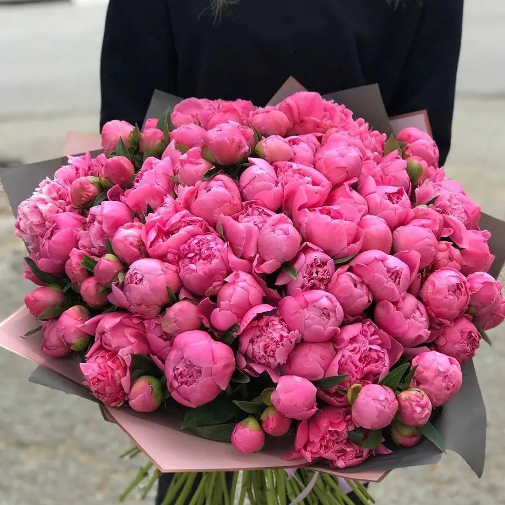

Пион — роскошный, пышный цветок, символ богатства, удачи и счастливого брака. Его крупные бутоны и нежный аромат никого не оставляют равнодушным.
Пионы родом из Китая, где их выращивали более 2000 лет назад. В китайской культуре пион считается "цветком императоров" и символом богатства и знатности. В Европу пионы попали в Средние века и быстро завоевали любовь садоводов. Существует два основных вида: травянистые (их стебли отмирают на зиму) и древовидные (кустарники, которые растут десятилетиями). Цветки пионов бывают простыми, полумахровыми и махровыми — последние напоминают воздушное облако из нежнейших лепестков. Палитра цветов включает белый, розовый, красный, коралловый, жёлтый. Аромат пионов — сладкий, насыщенный, с нотками розы и ванили. Пионы цветут недолго, всего 2-3 недели в конце весны — начале лета, поэтому их появление всегда праздник.